換気は制御できる！エネルギーを無駄にせず必要な時に必要な量だけ換気する。その方法とは・・・
TEL. 06-6627-2516
〒545-0021 大阪市阿倍野区阪南町3-8-26
もっと換気
2.換気と熱の関係
| 単に「換気と熱の関係」と言っても、「親戚関係？」ではありません。 換気は、「屋外の新鮮な空気を居室に取り込み、居室の汚れた空気を屋外に排出する」仕事の事を言っています。 この「換気」を行っている過程で、「屋外の新鮮な空気」が、居室に入る状態の時に、「換気と熱の関係」が、居室の冷暖房を行っている「エアコン」に対して、特に大きくかかわってきます。 |
| ①熱負荷 | |
| 「熱負荷」をここでは簡単に、「熱のエネルギーを消費する」と、捉えて頂いておきましょう。 次の様な熱負荷があります。 外気負荷： 換気のために外気を室内に供給する際に、外気の温湿度と室内の温湿度に等しくするために要する熱量（熱の量） 平たく言えば、「換気の際に生じる熱負荷」を外気負荷と簡単に考えて頂ければ良いでしょう。 侵入熱（輻射熱等）：外壁や窓ガラスを通過して流入する熱 人体負荷：在室者の発熱 照明負荷：照明器具による熱 機器発熱：様々な機械から生じる熱 すきま風負荷：扉や窓の開閉によって流入する空気の熱 この様な熱をまとめて、「熱負荷」と呼んでいます。 |
|
| 参考として、ある建物の熱負荷を円グラフで分けて見ると、こんな感じで分類されます。 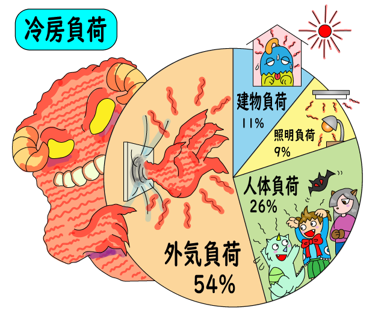 |
| ②換気による外気負荷 |
| グラフでもお判りの様に、「外気負荷」が熱負荷としてもっとも影響が大きく、この外気負荷が換気の作用によるものです。 だからと言って、換気は法律により定められているので、止めるわけには行きません。 そこで、換気を止めないで外気負荷を抑える方法が、色々と考えられ、全熱交換機（ロスナイ）や熱交換ユニット（デシカ）等がその代表機器として、市場に出ています。 |
3.効率の良い換気
| ①効率の良い換気 | ||
「効率の良い換気」を説明すると、「室内環境に応じて、フィルターを介し処理された外気を導入し、適切に排出される機能が備わった換気」の事です。
とはいっても、普段の日常生活の中で、換気について興味を持って観察する様な暇などは、全くありません。 居室の温度が上がったり下がったりすれば、エアコンの温度設定を変えると言う事はあっても、空気が汚れたからと言って、換気扇を「強」に変えたり、窓を開けたりと言った行動を取る人は、稀にはいるかも知れませんが、多分ほとんどの人は、換気は出来ているものと、思い込んでいるだけの事です。 そう言った意味でも、人の手を介さず「換気設備」そのものの機能が、適切に効率良く稼働していなくてはならないものです。 |
||
| ②効率の悪い換気 | |||||
効率の悪い換気を簡単に表して見ましたがみなさんも多分こんな光景を見掛けた事はありませんか？
換気扇が油等で汚れた状態だと、換気能力（力）は落ちてしまい、給気口から新鮮な空気を引張る事が出来なくなります。
扉の開閉に影響を受ける 冬の寒い季節に扉を開けると一気に屋外の冷たい空気が入るのは、給気口のフィルターの抵抗の方が扉の開放よりも大きい為に、抵抗の少ない扉の開口部から一気に室内に入り、換気扇から排出されるからです。 これは特に第三種換気でよく見かけられる光景です。
給気取込時に違和感（寒・暖の差）が大きい 排気側の換気扇の能力が、用途目的以上の能力を持っていると、給気口側の空気を引っ張る力も有り余り、必要以上の換気量になる事も十分あり、冬の寒い季節や夏の暑い季節ではこの様な事も起こってしまいます。 風量が制御できない 厨房以外の一般換気扇でも、同様の現象が発生する事もあり、騒音を発する事ももちろん生じます。 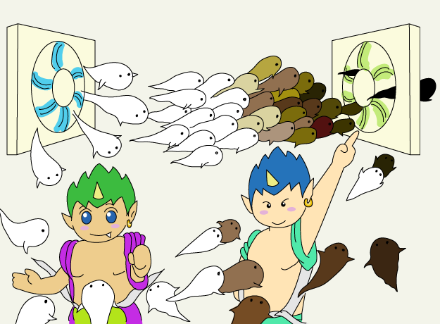やはり換気方法としては、第一種換気方式が適切ではないでしょうか |
|||||
| 1）第三種換気 | |
| 最も一般的に採用されている換気の種類は、下図の様な「第三種換気」です。 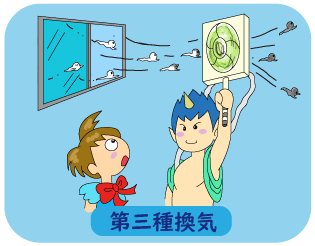 |
|
 |
排気側のファン（排気ファン又は、排気用換気扇）から、引っ張られた新鮮な外気は、給気口のフィルターを経由して室内に入り、排気側のファンから屋外へ排出します。 当然この部屋の圧力は、排気ファンと言う機械で空気を引く訳ですから、負圧（マイナス圧力）になります。 排気ファンの力（静圧と言う圧力）は、給気口とフィルターと、排気ファンに防虫網やシャッター（逆流防止シャッター）が有るとしたら、この全ての力を排気ファンが持っていなければ、当初に計画していた、換気量としての能力が発揮されなくなります。 |
| 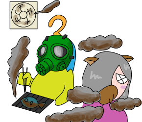 | 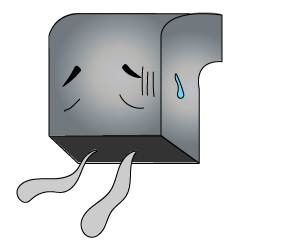 |
| 「第三種換気」は、負圧（マイナス圧力）が必要な用途、例えば危険物の貯蔵所等で、給気フィルターを介さず排気に重点を置くと言った場所では、問題無く機能が発揮されます。 | ||
| 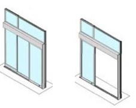 | しかし、営業目的とした居室では、負圧（マイナス圧）作用の影響により、扉が閉まっている時は給気口から屋外空気が入りますが、扉を開けると扉の開口が給気口よりも抵抗が少なくなり、扉側から屋外の新鮮空気が一気に入り、扉付近で寒暖差の空気影響が大きく生じ、違和感やエアコンの動作にも影響を与えます。 | |
| 更に、給気口のフィルターが汚れて詰まってしまったりすると、右図の様な結果になると言った光景を、皆さんも時々目にしませんか？ |
||
| 居室に「第三種換気」を採用する時の注意点としては、「給気フィルターの静圧」を十分把握しておく事が大切です。 「給気フィルター」の汚れ具合により換気量のが変動し、出入口の扉の開閉によっても、換気量の増減が左右され、特に扉付近ではエアコンの能力にも影響を与えるという事を、是非お忘れなく。 |
||
| 2）第二種換気 | |
| 居室内を常時正圧（プラス圧）に保持する環境に、「第二種換気」が採用されています。 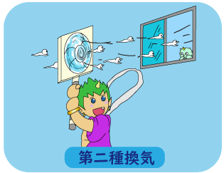 |
|
 |
例えば、クリーンルームや、食品工場、手術室と言った居室は、室内の空気圧力を「正圧（プラス圧）」に保つ事で、外部（隣室等）からの空気侵入を遮断する事が可能になり、居室の空気汚染が防止出来ます。 しかし、給気フィルターの汚染度により、圧力変動が生じる為、常に適切な差圧制御（コントロール）が要求されます。 「第二種換気」は、一般居室でも採用出来ない事は無く、一定の外気量を取り入れ、別室の排気口から排出させれば、何等問題有りませんが、フィルターの目詰まりが生じると、当然圧力も低下するので、その辺りは小まめに清掃して頂ければ良いでしょう。 |
| 3）第一種換気 | |
| 「第一種換気」は、給気と排気の両方を機械（給排気ファン）を設けた、機械換気方式です。 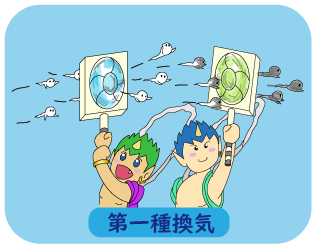 |
|
 |
「第一種換気」の特徴は、給気ファンと排気ファンで構成され、室内の圧力を一定（±0）保持出来る事で、扉の開閉等による負圧になると言った影響を受けず、常に安定した換気が可能になります。 とはいっても、給気フィルターの汚れ度が大きくなると、給気フィルターの圧損も大きくなり、給気ファンの風量が下がり気味になり、居室は負圧寄りに移行しますが、「第三種換気」で生じる扉付近の急激な変化は生じません。 給気ファンのコストはUPしますが、外気導入時のフィルターによる粉じん等の除去効果は、「第三種換気」と比較すると格段に違い、換気性能としては申し分ありません。 |
| この「第一種換気」としては、給排気ファンだけでは無く、全熱交換機（ロスナイ）等と言った製品にも、幅広く採用されています。 | |
| ④フィルターの効果 | |
| 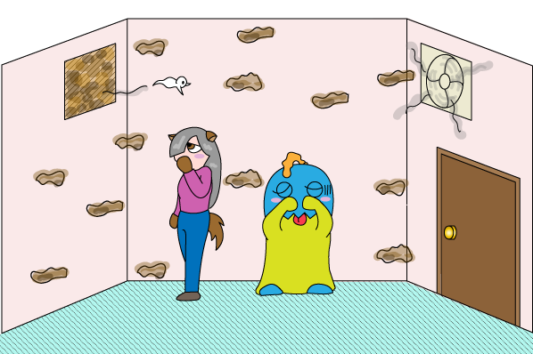 | |
|
フィルターが汚れると目詰まりが生じ、外気が吸込まれるフィルターは抵抗が大きくなった分、排気用換気扇の持っている空気を排出する力が発揮されなくなり、換気能力が出なくなります。 |
|
| 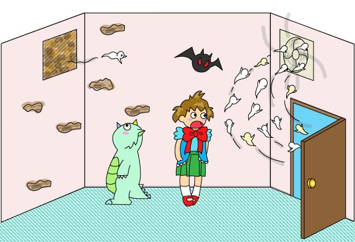 | |
|
ところが、扉を開けると開口面積が大きくなります。開口面積が大きい分だけフィルターよりも抵抗が少なく、そこから一気に外気の空気が吸い込まれ、換気扇から屋外へ一部の汚れた空気は排出されますが、給気口のフィルターからはほとんど外気が入らなくなり、フィルター周辺の汚れた空気はすぐに排出されません。 |
|
| 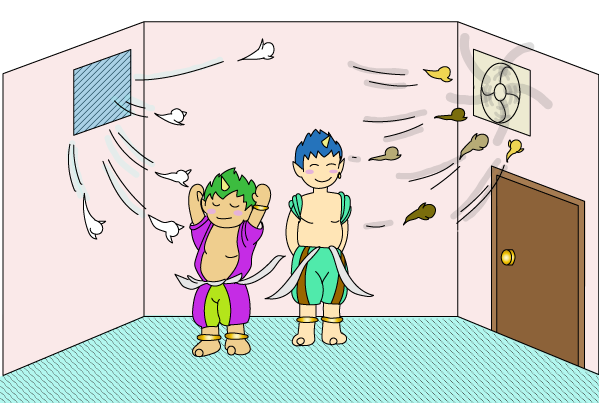 | |
|
汚れたフィルターを洗って汚れを落としたり、新品フィルターと入れ替えると、フィルターの抵抗が少なくなり、扉を閉めていると給気フィルター側から新鮮な屋外空気が吸込まれ、換気扇から屋外に汚れた空気が排出され、正しい換気が出来るという訳です。 |
| ⑤フィルターの種類 | ||||||||||||||||||
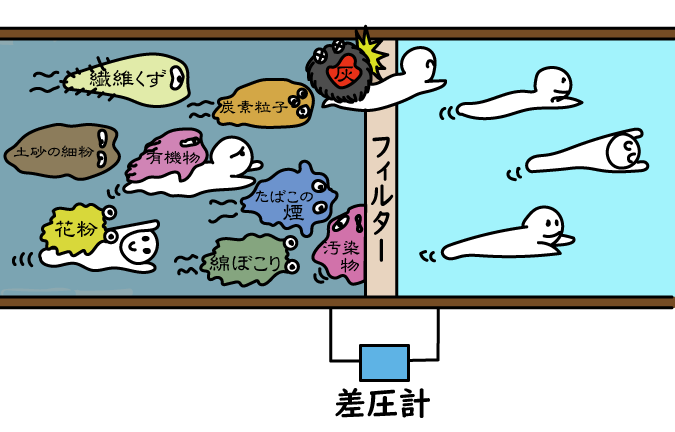
|
||||||||||||||||||
| ⑥フィルターのメンテナンス | ||
| ここでは、外気導入時のフィレドンフィルターについて説明します。 フィレドンフィルターは、無方向性の繊維集合体で、圧力損失が低くかつ集麈容量が大きく、 湿度の影響を受けない難燃性のエアフィルタなので、勿論洗浄による再生は十分可能です。 然し、掃除機で汚れを吸い取っても、内部に付着した汚れは全く取れませんので、ご注意ください。 洗浄の際には、強く擦らないでホースで洗い流す程度で、十分汚れは落とせます。 |
||
| 汚れたフィルター |
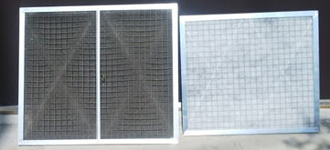 | 新品フィルター |
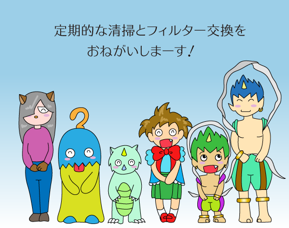
4.換気の制御
| ① 換気を制御する目的 | ||
換気量を制御する目的は、屋外の新鮮な空気を導入する時に生じる「外気負荷」を、換気量を制御する事で「外気負荷」を抑制してあげれば、室内のエアコンの稼働率が下がり、熱源に対するエネルギーの消費量が下がり、エネルギー抑制としての効果が発揮されます。 その前提条件として最も重要な事は、「適切な換気が行われている」という事です。 いくら「エネルギー削減」と言っても、もともと換気能力が満足されない状態で、換気を制御しても無意味な制御になり、逆に健康を害する要因にもなり兼ねません。 まずは、「適切な換気量が維持されている」事を前提に、換気制御の話を進めなければなりません。
「エアコン（冷暖房）と換気」この二つの設備は、『エアコン（冷暖房）や空調』は、室内の温湿度を維持する目的で稼働し、『換気』は室内の汚れた空気を排出すると同時に、屋外の新鮮な空気を取り入れる目的で稼働しています。 この様に説明すると、別段何事もなく当然に様に感じますが、実はこの『エアコン（冷暖房）や空調』と、『換気』は異なる目的で稼働し、特にエアコン稼働におけるエネルギー消費に、大きく影響を及ぼします。 お互い異なる目的で稼働している『換気』の部分を、室内の空気質に応じ制御を行い、室内環境を一定条件範囲で維持してあげれば、間違いなく省エネ性の向上にも繋がります。 しかし現状では、『エアコン（冷暖房）や空調』は、ある程度は機器本体で制御を行っていますが、『換気』に至っては、制御を活用していないケースの方が、多く存在しているのではないでしょうか。 その様な観点から、「換気が正しく機能している事」を前提として、「換気制御」を採用される事をお薦めします。 |
||
| ② 換気の制御 | ||||||||||||||||||||||||||||
|
||||||||||||||||||||||||||||


| つまり、『一定換気量の環境では、人員が少ない時に≪エネルギーの無駄使い≫が生じる』事になります。 こうした現象を防止するには、在室人員数に応じ『換気扇』のスイッチを『入り切』すれば簡単に出来る筈です。 しかし人員数を対象にすると、幾らの人数でスイッチを『入り切』させれば良いかは見出せませんし、実際には出来そうで出来な作業というよりも、むしろ経費の無駄に繋がります。 そこで、『自動制御』という、便利な物を補足させれば、容易に解決します。 |
 |
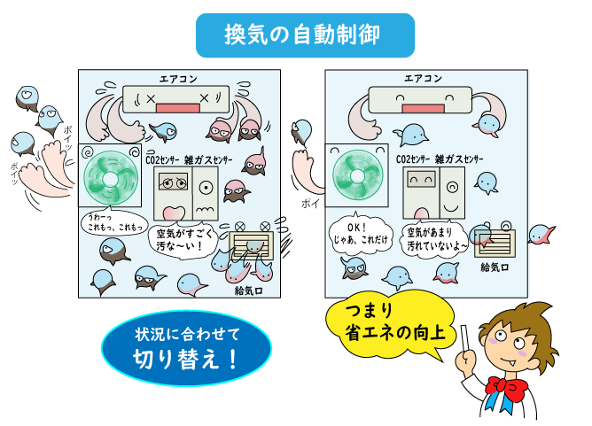 |
|
| 人を目的とした換気量は、基本的にCO2濃度が主体ですので、ここではCO2濃度だけを対象として考えると、建築物衛生法では1,000ppm以下と定められています。 そこで、CO2センサー（CO2濃度を計測するセンサー）を利用して、900ppm以下で『換気扇』を停止させ、1,000ppm以上で『換気扇』を運転すれば、在室人員が判らなくても『換気扇』を自動的に運転制御をする事は、容易に果たせます。 更にCO2の変動と、室内外の温湿度を時系列で計測しておけば、情報としても管理出来ます。 もう少し踏み込み、『換気扇』と『エアコン』の運転状況をプログラムに組み込めば、『稼働状況』も時系列で判別出来、機器の稼働情報も収集する事も十分可能です。 この様に、人が出来ない事を『道具』を介すると容易に実現出来、人では『気付かないで、見過ごしている』要因を『自動制御という道具』を介する事で、『エネルギーを、無駄に消費させない設備』が実現出来ます。 |
バナースペース

 知ってる？換気
知ってる？換気株式会社ネオテック
〒545-0021
大阪市阿倍野区阪南町3-8-26
TEL 06-6627-2516
FAX 06-6627-2518